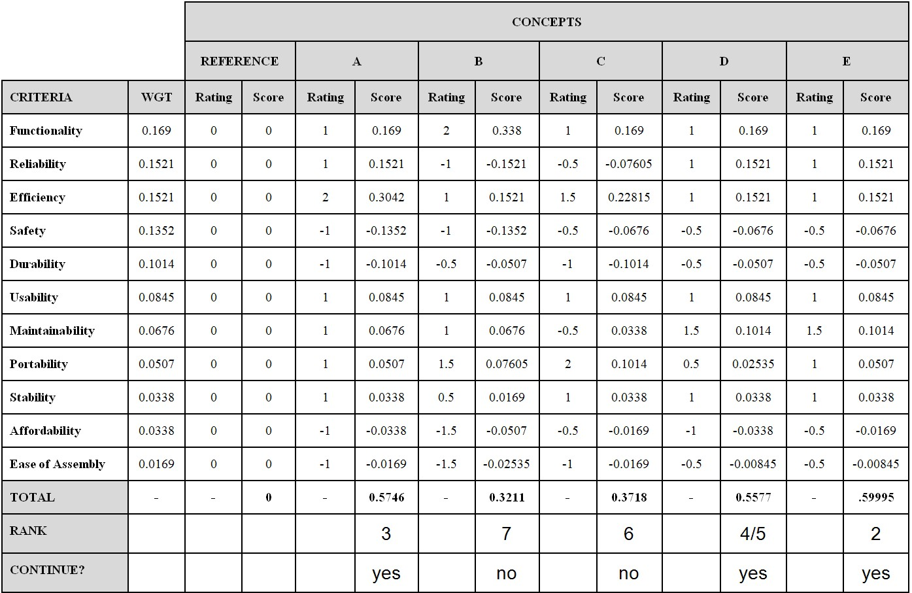

This project presents the design of a human-powered cement mixer for use in underdeveloped communities. These communities suffer from a vicious cycle of not having access to technology from a lack of infrastructure, and they cannot develop infrastructure without the technology to do so. The final design is simple to manufacture and is considerably cost-effective, providing these locales with an efficient alternative to current methods of mixing concrete
This project was conducted using a systems approach, which is the identification and analysis of all individual components (subsystems).
The image below illustrates a Scenario Diagram for the production of concrete. The team had created a Scenario Diagram for every function of the mixer (e.g. Assembly, Maintenance, etc.). These were created to recognize potential uses, which will help with the design process
The image below is a Requirements Diagram, designed for the team to determine characteristics of the mixer.
A systems diagram was designed to identify subsystem functionality. Each subsystem has its own functions that work independent of other subsystems. However, once assembled, each subsystem needs to fit in seamlessly with one another. This diagram helps organize and visualize both micro and macroscopic functionality.
Below is a morphological chart. It displays "embodiments" (ideas/concents/designs) of individual subsystems developed through a brainstorming session. Selected embodiments are then combined to generate design concepts.
Once multiple design concepts have been constructed, they were ranked quantitatively using decision making techniques, including a Weighted Decision Matrix, as seen below. This is the first iteration; the team had conducted three iterations to determine the best design concept.
The winning design concept had been modelled using SolidWorks. Our mixer is built using everyday objects, including bicycles, an oil drum, and tires. The frame is a sectioned-off truck frame, however this can easily be replaced with wood/spare metal. The mixer is powered using a friction drive which turns the drum. The design can be seen in the following images.